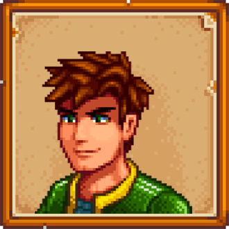

-
Ronan Fudo

Descrição
Ronan Fudo é o criador desse projeto em referência ao Stardew Valley junto com o projeto X-Devs da guilda Devs em Dobro. Ele está iniciando em HTML, CSS e JavaScript e espera que consiga fazer as coisas cada vez melhores para que trabalhe no ramo
-
Abigail
Descrição
Abigail mora na loja com seus pais. Às vezes discute com sua mãe que se preocupa com o "estilo de vida alternativo" de Abigail. Sua mãe diz o seguinte: "Eu gostaria que Abby se vestisse mais apropriadamente e parasse de tingir seu cabelo de azul. Ela tem uma maravilhosa cor de cabelo natural, assim como sua avó. Ah, e eu gostaria que ela encontrasse alguns interesses saudáveis, em vez deste absurdo oculto em que ela está. "Você pode encontrar Abigail sozinha no cemitério, ou talvez em uma tempestade a procura de sapos.
-
Alex
Descrição
Alex ama esportes e passar o tempo na praia. Ele é um pouco arrogante e conta vantagem a todos que ele irá ser um atleta profissional. Seria sua arrogância apenas uma fachada para mascarar sua devastadora insegurança? Estaria ele usando seus sonhos com esportes para preencher o vazio deixado pelo desaparecimento de seus pais? Ou seria ele apenas um jovem tentando “parecer legal?”
-
Elliot
Descrição
Elliott mora sozinho em uma cabana na praia. Ele é um escritor que sonha em, um dia, escrever um romance magnífico. Ele é sentimental e “romântico” com tendências a fazer poesias sobre flores. Quando ele pode pagar, gosta de uma bebida forte no Saloon Fruta Estrelar. Poderia um humilde fazendeiro como você ser a inspiração que Elliott procura? Só existe um jeito de descobrir…
-
Emily
Descrição
Emily vive com sua irmã Haley, e juntas elas tomam conta da casa dos seus pais, que estão viajando pelo mundo pelos últimos dois anos. Ela trabalha com Gus, que emprega seu tempo parcial no Saloon. Ela também é amiga de Sandy, que em seu primeiro encontro com o jogador, afirma ter tido conhecimento da presença do fazendeiro mesmo antes do acesso ao deserto cálico ter aberto, dizendo que ela havia escrito para Emily sobre o recém-chegado.
-
Haley
Descrição
Ser rica e popular durante o ensino médio tornou Haley um pouco arrogante e centrada em si mesma. Ela tem uma tendência a julgar as pessoas por motivos superficiais. Mas será que é tarde demais para ela descobrir um significado mais profundo para a vida? Existe uma jovem divertida e mente aberta escondida dentro dessa casca revestida de doces?
-
Harvey
Descrição
Harvey é o médico da cidade. Ele já está um pouco velho para ser solteiro, mas possui um coração bondoso e uma posição respeitada na comunidade. Ele vive em um pequeno apartamento acima da clínica médica, mas passa a maior parte do tempo trabalhando. Você pode sentir uma tristeza nele, como se houvesse algo que ele não está contando...
-
Leah
Descrição
Leah vive sozinha em uma pequena cabana nos arredores da cidade. Ela adora passar tempo ao ar livre, procurando por uma refeição selvagem ou simplesmente apreciando os presentes da estação. Ela é uma artista talentosa, com um grande portfólio de trabalhos... mas é muito nervosa para exibi-los ao público. Talvez você possa dar a ela um pequeno impulso de confiança?
Maru
Descrição
Crescendo com uma carpinteira e um cientista como pais, Maru adquiriu uma paixão por criar aparelhos desde pequena. Quando não está em seu quarto, mexendo com ferramentas e máquinas, às vezes ela faz pequenos trabalhos na clínica local. Amigável, extrovertida e ambiciosa, Maru seria uma excelente combinação para um recém-chegado como você... Você pode conquistar o coração dela, ou ela vai escapar por entre seus dedos e desaparecer para sempre de sua vida?
Penny
Descrição
Penny mora com sua mãe, Pam, em um pequeno trailer perto do rio. Enquanto Pam está fora se divertindo no saloon, Penny cuida silenciosamente de suas tarefas no quarto escuro e abafado que é obrigada a chamar de lar. Ela é tímida e modesta, sem grandes ambições na vida além de se estabelecer e começar uma família. Ela gosta de cozinhar (embora suas habilidades sejam questionáveis) e de ler livros da biblioteca local.
Sam
Descrição
Sam é um cara extrovertido e amigável, transbordando de energia juvenil. Ele toca guitarra e bateria, e quer começar uma banda com Sebastian assim que tiver músicas suficientes prontas. No entanto, ele tem o hábito de começar projetos ambiciosos e não terminá-los. Sam está um pouco estressado com o iminente retorno de seu pai, que esteve ausente por anos devido ao seu trabalho.
Sebastian
Descrição
Sebastian é um solitário rebelde que vive no porão dos pais. Ele é meio-irmão mais velho de Maru e sente que sua irmã recebe toda a atenção e adoração, enquanto ele é deixado para definhar no escuro. Ele tende a se envolver profundamente em jogos de computador, quadrinhos e romances de ficção científica e às vezes passa longos períodos perseguindo esses hobbies sozinho em seu quarto. Ele pode ser um pouco antipático com pessoas que não conhece. Será que um novo fazendeiro encantador poderia cultivar a terra devastada de seu coração? Quem sabe?
Shane
Descrição
Shane é um homem solitário e mal-humorado que trabalha para a Joja Corporation. Ele mora com sua tia, Marnie, e lida com problemas pessoais, incluindo alcoolismo e depressão. Como resultado, ele tende a se fechar para o mundo exterior e pode ser um pouco hostil com pessoas que não conhece bem. No entanto, ele tem um interesse particular em galinhas e, apesar de sua atitude inicialmente reservada, pode se abrir e compartilhar informações úteis sobre a criação de animais com aqueles dispostos a conhecê-lo melhor.
Krobus
Descrição
Krobus é uma figura misteriosa e solitária que reside nas Cavernas da Mina. Ele é conhecido por sua natureza reservada e por viver nas profundezas escuras e inexploradas da mina. Krobus é diferente dos outros habitantes da vila, pois ele é um Monstro das Sombras, uma raça subterrânea que muitos temem e evitam. Devido à sua aparência incomum e ao seu habitat isolado, Krobus pode parecer inicialmente estranho ou intimidante para os outros moradores da vila. No entanto, aqueles que se aproximam dele descobrem que ele é gentil, inteligente e tem um profundo conhecimento das criaturas e segredos das cavernas.
Linus

Descrição
Linus é um residente solitário e bondoso que vive em uma cabana nas montanhas. Ele é um eremita amigável que prefere a simplicidade da vida no campo e evita o tumulto da cidade. Linus é frequentemente visto vasculhando os campos e florestas em busca de comida e recursos naturais, levando uma vida modesta e sustentável. Apesar de sua aparência desleixada e sua tendência a evitar a sociedade, Linus é profundamente sábio e compassivo, oferecendo conselhos valiosos e palavras de encorajamento para aqueles que cruzam seu caminho.
Morris
Descrição
Morris é um personagem controverso, conhecido por sua natureza ambiciosa e sua posição como gerente da JojaMart, uma grande corporação que compete com a agricultura tradicional e o estilo de vida rural da vila. Ele é retratado como um indivíduo ganancioso e manipulador, cujo principal objetivo é maximizar os lucros da JojaMart, mesmo que isso signifique prejudicar a comunidade local e o meio ambiente. Morris muitas vezes adota táticas agressivas de marketing e negócios para atrair clientes e eliminar a concorrência, o que o torna impopular entre os moradores de Stardew Valley.
Robin
Descrição
Robin, conhecida por sua habilidade como carpinteira e sua amizade com o jogador. Ela é retratada como uma mulher trabalhadora e habilidosa, que opera a Carpintaria local junto com seu marido, Demetrius. Robin é conhecida por sua gentileza e sua disposição em ajudar os outros, oferecendo seus serviços de carpintaria para construir e melhorar as propriedades dos moradores da vila. Além de seu trabalho na Carpintaria, Robin também é uma mãe dedicada e uma figura carinhosa para seus dois filhos, Maru e Sebastian.
Sandy
Descrição
Sandy é uma personagem misteriosa e exótica, conhecida por ser a proprietária do Oasis, uma loja no Deserto de Calico. Ela é retratada como uma mulher enigmática e cativante, cujo passado e origens são envoltos em mistério. Sandy é uma comerciante habilidosa, oferecendo uma variedade de itens raros e exóticos em sua loja no oásis, incluindo sementes de plantas do deserto, artefatos antigos e outros tesouros únicos. Embora ela possa parecer reservada e distante à primeira vista, Sandy é gentil e acolhedora com aqueles que se aproximam dela com respeito e curiosidade.
Rasmodius
Descrição
Rasmodius é uma figura enigmática e poderosa, conhecida por ser o mago residente da Torre do Mago, localizada no canto nordeste do vale. Ele é retratado como um feiticeiro sábio e misterioso, cujos poderes e conhecimentos mágicos são incomparáveis na região. Rasmodius é solitário por escolha, preferindo passar seu tempo estudando e praticando magia em sua torre isolada, longe das distrações e preocupações da vida na vila. No entanto, ele é gentil e prestativo com aqueles que buscam seu conselho e orientação, oferecendo conhecimentos esotéricos sobre magia, alquimia e ocultismo para aqueles que demonstram interesse genuíno em aprender.
MR. QI
Descrição
Mr. Qi é uma figura enigmática e misteriosa, conhecida por ser o responsável por desafios e eventos especiais na região. Ele é retratado como um indivíduo de grande poder e influência, cujas verdadeiras intenções e origens são envoltas em mistério. Mr. Qi é conhecido por oferecer tarefas e missões desafiadoras para os habitantes de Stardew Valley, recompensando aqueles que conseguem completá-las com itens valiosos e segredos ocultos. Ele é solitário e reservado, preferindo operar nas sombras e observar os eventos da vila de longe. Apesar de sua natureza enigmática, Mr. Qi é respeitado e temido por muitos na região, devido ao seu conhecimento e poder incomuns.